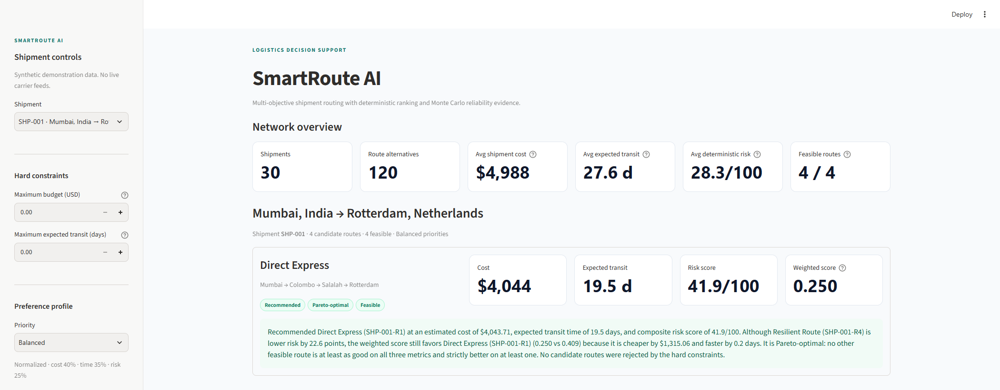
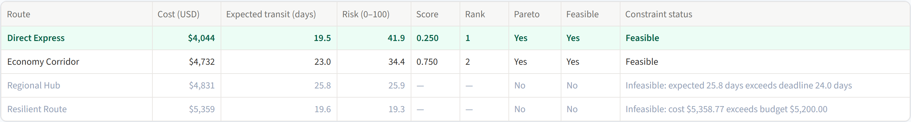

Multi-objective route selection with hard constraints, Pareto analysis, and Monte Carlo reliability evidence.
A shipment between two hubs usually has more than one viable routing: a direct service, a regional consolidation, an economy corridor, or a costlier resilient option. The options trade off against each other. A faster route can cost more and carry higher delay exposure. A cheaper route can be slower or riskier. A safer route can consume budget or calendar time the shipment does not have.
Choosing the lowest freight cost alone ignores commitments that are often more expensive to break than the freight bill: a late delivery, an unreliable corridor, or risk concentrated in one congested port. Planners therefore compare alternatives on several objectives at once, under a budget and a delivery target, and need to explain the choice to someone else.
SmartRoute AI is a decision-support prototype for that comparison. Given one shipment's candidate routes and a planner's priorities, it answers two linked questions: which feasible route best matches the weighted priorities, and how uncertain is that route's delivery time under an explicit delay model. The scope is deliberately narrow — it evaluates existing route options for one shipment at a time, and does not generate maritime paths, price real freight, or predict risk from live data.
The deterministic optimizer (src/optimizer.py) computes three objective values per
route, removes routes that violate hard constraints, min-max normalizes the remaining metrics,
and ranks them with stakeholder weights. Pareto analysis runs on the same feasible set, so the
planner can see whether the weighted winner is genuinely non-dominated. A separate Monte Carlo
engine (src/simulation.py) provides reliability evidence and never alters scores,
ranks, or constraint outcomes. The Streamlit dashboard (app.py) and the CLI
(main.py) are thin clients over those two modules.
src/data_generator.py produces and validates the synthetic dataset once; both
clients read the same CSV, so every figure in this report can be regenerated from the
repository with the commands in Section 11.

| Technology | Role in this project |
|---|---|
| Python 3.12 | Implementation language for the optimizer, simulator, and clients |
| pandas | Dataset validation, route evaluation, ranking, and summary statistics |
| NumPy | Vectorized trial generation and percentile estimation |
| Streamlit | Four-tab interactive dashboard, plus AppTest integration tests |
| Plotly | Six chart types: scatter, ranking bars, risk bars, histogram, on-time bars, and profile bars |
| pytest | 110 tests for formulas, constraints, simulation, dataset rules, and the dashboard |
No machine-learning framework, database, or external API is used. Five packages are installed
from requirements.txt; everything runs offline.
The optimizer adds expected delay to the scheduled transit time of each route:
delay_probability is the assumed chance that the route is delayed at all;
delay_impact_days is the assumed length of that delay. For SHP-001-R1
(Direct Express): 18.6 + 0.336 × 2.6 = 19.47 days. This estimate drives constraint filtering and ranking; its distribution is left to the simulation layer.
Composite operational risk is a 0–100 indicator built from three assumed inputs:
The result is clipped to [0, 100]. For SHP-001-R1: 0.45 × 33.6 + 0.30 × 76.3 + 0.25 × 15.5 = 41.9. Delay probability receives the largest weight because schedule uncertainty directly affects delivery commitments. Congestion is next because it drives variability at ports and corridors. Geopolitical exposure is weighted lowest because it is rarer and less directly observable. The weights are module constants; the score is a decision-support index, not a probability of failure, and it is not calibrated against historical events.
Within one shipment's feasible set, each metric becomes (value − min) / (max − min).
The best route scores 0, the worst 1. If all values are equal, every normalized value is 0: the code
divides only when max > min, so equal metrics never produce a division by zero or a
NaN.
Weights are validated (numeric, finite, non-negative, known keys, one positive value minimum) and normalized to sum to 1. The default Balanced profile is 40% cost, 35% time, 25% risk.
| Profile | Cost | Time | Risk | Intended priority |
|---|---|---|---|---|
| Cost focused | 70% | 20% | 10% | Procurement savings |
| Balanced | 40% | 35% | 25% | Default planning view |
| Risk averse | 15% | 20% | 65% | Commitment-sensitive lanes |
| Time critical | 15% | 70% | 15% | Expedited or perishable freight |
A route is feasible only if cost_usd ≤ budget and
expected_transit_days ≤ deadline; both limits are inclusive and either may be
disabled. Infeasible routes stay visible for comparison but receive no score, no rank, no Pareto
status, and can never be recommended. If nothing is feasible, the application reports how many
routes failed each constraint, the cheapest cost and fastest time available, and which limit to
review.
Feasible routes are sorted by score, then by cost; equal scores use a deterministic
method="first" tie-break so output is stable across runs. Among feasible routes, a
route is Pareto-optimal if no other route is at least as good on cost, expected time, and risk
and strictly better on at least one. Identical routes do not dominate each other. Pareto status
and rank answer different questions: a weighted winner can be dominated when the weights favour one
objective.
For each route and trial: start from the scheduled transit time, draw a Bernoulli delay event with
the route's delay_probability, and if delayed add extra days from a bounded triangular
distribution with lower bound 0.5 × delay_impact_days, mode
delay_impact_days, and upper bound 1.5 × delay_impact_days. Defaults are
10,000 trials per route and seed 42. The triangular delay distribution is a modelling
assumption, not an empirically fitted carrier distribution: it encodes "delays are usually
near the stated impact, rarely much longer" and must be replaced with historical data before
operational use. Zero delay impact adds no days; a probability of 0 produces no events, a
probability of 1 delays every trial.
Each route gets an independent random stream spawned from the seed, so results are reproducible without global random state and the input frame is not mutated. Outputs are mean and P50/P90/P95 transit time, on-time probability against the selected deadline (unavailable without one), mean cost, and trial count. Cost is deterministic in the dashboard; the optional cost-variation API is not exposed because the synthetic dataset gives no defensible estimate of cost variability.
All figures below come from the repository dataset and code: 30 shipments, 4 candidate routes each, 120 route options, generated with seed 42 and validated. The mean cheapest option per shipment is $4,987.84; mean expected transit is 27.6 days and mean risk 28.3/100. Without constraints, 22 shipments have all four options on the Pareto frontier, 7 have three, 1 has two.
All four routes are feasible and Pareto-optimal, so the choice is decided by weights alone:
| Route | Cost | Expected transit | Risk | Score | Rank |
|---|---|---|---|---|---|
| Direct Express | $4,043.71 | 19.5 d | 41.9 | 0.250 | 1 |
| Resilient Route | $5,358.77 | 19.6 d | 19.3 | 0.409 | 2 |
| Economy Corridor | $4,732.31 | 23.0 d | 34.4 | 0.571 | 3 |
| Regional Hub | $4,830.55 | 25.8 d | 25.9 | 0.662 | 4 |
Direct Express wins because it is the cheapest and fastest. Its high risk costs it the full 0.25 risk weight, but Resilient Route's 22.6-point risk advantage cannot recover the $1,315.06 price gap under a 40% cost weight.
With a $5,200 budget and 24-day limit only Direct Express and Economy Corridor remain feasible: Resilient Route fails the budget and Regional Hub the deadline (Figure 2). Direct Express keeps rank 1, score 0.250 against 0.750. With a $1,000 budget every route fails; the dashboard reports 0/4 feasible and names the budget as binding.

| Route | Mean | P50 | P90 | P95 | On-time |
|---|---|---|---|---|---|
| Direct Express | 19.5 | 18.6 | 21.5 | 21.8 | 77.7% |
| Resilient Route | 19.7 | 19.3 | 19.3 | 23.9 | 93.2% |
| Economy Corridor | 23.0 | 20.7 | 29.0 | 29.9 | 70.5% |
| Regional Hub | 25.8 | 24.9 | 30.1 | 31.0 | 0.0% |
| Profile | Recommended | Score |
|---|---|---|
| Cost focused | Direct Express | 0.100 |
| Balanced | Direct Express | 0.250 |
| Risk averse | Resilient Route | 0.350 |
| Time critical | Direct Express | 0.150 |
Hard constraints stay active in every profile.
This is where the deterministic winner is not the most reliable. Direct Express delays often (33.6% of trials) but briefly, so its tail is thin. Resilient Route delays rarely (6.6%) but for longer — its P50 equals the scheduled time while its P95 is 23.9 days. At a 21-day deadline the cheap route misses 22.3% of the time and the expensive route 6.8%; the dashboard shows that trade-off rather than hiding it in a single score.
Verification: python -W error -m pytest -q → 110 passed on Python 3.12.10. The dashboard
was exercised through Streamlit AppTest and captured from a headless Edge session.
The implementation delivers a working, tested, reproducible prototype: validated synthetic data, an explainable weighted optimizer with hard constraints and Pareto analysis, a reproducible Monte Carlo layer with tail metrics, a four-tab dashboard, a CLI, and 110 automated tests. Every number in this report regenerates from the repository. Production work would start with data, not features: calibrate delay distributions and risk weights from historical shipments, connect carrier and port feeds with provenance metadata, extend optimization to fleet-level allocation, validate any prediction model before calling risk predictive, and add persistence, monitoring, and approval. None of these are implemented today; they are the path from prototype to operational system.